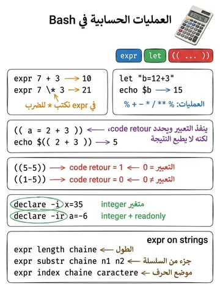

Expressions arithmétiques
التعابير الحسابية
الشرح بالعربية
bash يعامل المتغيرات كنصوص؛ للحساب: (( x=2+3 )) ثم $((x*2))، ولا حاجة لـ $ داخل (( )). declare -i y يجعل y عددًا. expr يحسب مع مسافات و\* مهرب، وlet كذلك. القسمة صحيحة و% تعطي الباقي. sleep توقف التنفيذ n ثانية. راجع أمثلة القوائم والحلقات العددية.
Illustrations de la leçon
1 planche · cliquez pour agrandir
Contenu du cours
Pages 374–383 · texte intégral du support
Expressions arithmétiques habituelles évaluées à l'aide de
expr (révolue),let (moderne et fait pour plusieurs expressions)
((…)) pour une seule expression (Comme let)
Ex :
$ a=100$ expr $a + 1=> Affiche la valeur de a incrémenté de 1
$ let a=a+1 b=2*a/3Incrémente a de 1 et affecte à b la valeur 2a/3
Pas d'espace dans les expressions
$ ((y = 2 * x +3))Affecte à y la valeur de l'expression 2x+3
ENTIERS ET EXPRESSIONS ARITHMÉTIQUES
Opérateurs identiques à ceux du langage C :
Arithmétiques :
() pour fixer l'ordre d'évaluation, ! Négation, * multiplication, / quotient, % modulo, + addition, - soustraction.
a++, a-- post-incrémentation, post-décrémentation.
++a, --a pré-incrémentation, pré-décrémentation.
Booléens :
<=, >=, <, >, == (égalité), != (différent), && (et logique), || (ou logique)
Affectation :
= (affectation simple)
ENTIERS ET EXPRESSIONS ARITHMÉTIQUES
Commandeinterne : (( Cette commande interne est utilisée pour effectuer des opérations arithmétiques :
Syntaxe : (( expr_arith ))
expr_arith est évaluée ;
si cette évaluation donne une valeur différente de 0, alors le code de retour de la commande interne (( est égal à 0 sinon le code de retour est égal à 1.
Exemple :
$ (( 1‐5 ))=> la valeur de l'expression arithmétique est égale à ‐4 donc le code de retour de (( est égal à 0
$ echo $?$ (( 5‐5 ))=> la valeur de l'expression arithmétique est 0, donc le code de retour de (( est égal à 1
$echo $?ENTIERS ET EXPRESSIONS ARITHMÉTIQUES
ENTIERS ET EXPRESSIONS ARITHMÉTIQUES
Commande interne ((
Il est inutile d'utiliser le caractère de substitution $ devant le nom d'une variable car il n'y a pas d'ambiguïté dans l'interprétation ; par contre, lorsqu'une expression contient des paramètres de position, le caractère $ doit être utilisé.
Exemple :
$ declare –i a=2$ (( b = a + 7 ))$ echo $b$ datejeudi 21 décembre 2006, 19:41:42 (UTC+0100)
$
$ set $(date)$
$ (( b = $2 + 1 )) => incrémentation du jour courant$
$ echo $bValeur d'une expression arithmétique :
La commande interne (( expr_arith )) n'affiche pas sur la sortie standard la valeur de l'expression arithmétique expr_arith.
Pour obtenir la valeur de l'expression arithmétique, on utilise la syntaxe :
$(( expr_arith ))Exemple :
$echo $(( 7 * 2 ))$echo $(( a= 2*8 ))$echo $(( 7 < 10 ))ENTIERS ET EXPRESSIONS ARITHMÉTIQUES
Commande expr
La commande expr permet d'effectuer des calculs sur des valeurs numériques, des comparaisons, et de la recherche dans des chaînes de texte.
Exemple :
$ expr 7 + 3$ expr 7 \* 3$ a a=`expr 13 – 10`$ echo $aENTIERS ET EXPRESSIONS ARITHMÉTIQUES
Commande let
En bash, les var. sont toutes des chaînes de caractères ⇒Incapable de manipuler des nombres ⇒pas d’opérations!
On peut faire des calculs en utilisant l'instruction "let".
Syntaxe : let "expr_arith"
Exemple :
$ let "b=12+3"$ echo $bLes opérations :
L’addition : +
La soustraction : −
La multiplication : ∗
La division : /
La puissance : ∗∗
Le modulo : %
ENTIERS ET EXPRESSIONS ARITHMÉTIQUES
Variables de type entier
Pour définir et initialiser une ou plusieurs variables de type entier, on utilise la syntaxe suivante : (même syntaxe avec la commande typeset )
declare-i nom[=expr_arith] nom[=expr_arith] ...
L'avantage est qu'il devient possible d'effectuer des calculs et des comparaisons sans passer par expr. La commande let ou « ((...)) » permet des calcules sur variables.
Pour que la valeur d’une variable entière ne soit pas accidentellement modifiée après qu’elle ait été initialisée, il suffit d’ajouter l’attribut r.
pour connaître toutes les variables entières définies, il suffit d’utiliser la commande
declare -iENTIERS ET EXPRESSIONS ARITHMÉTIQUES
Variables de type entier
Exemples :
$ declare ‐i x=35=> définition et initialisation de la variable entière x
$ declare ‐i v w=> définition des variables entières v et w
$ v=12=> initialisation de v par affectation
$ read w=> initialisation de w par lecture
$declare ‐ir a=‐6=> seule la consultation est autorisée !
$ typeset ‐i resultat$ resultat= 6*7$ echo $resultat$ resultat=resultat*3$ resultat=ErreurErreur: bad number
ENTIERS ET EXPRESSIONS ARITHMÉTIQUES
Commande sleep
La commande sleep permet d'attendre le nombre de secondes indiqués. Le script est interrompu durant ce temps. Le nombre de secondes et un entier compris entre 0 et 4 milliards (136 ans).
Exemple :
$ sleep 10 ; date